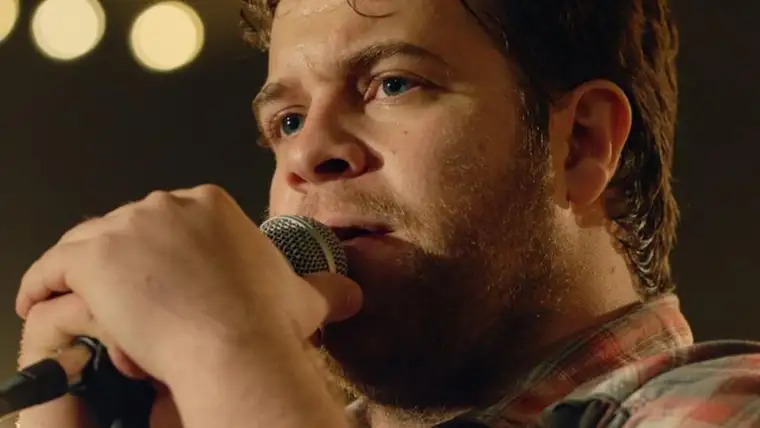

FARGO — Rick Solarski was only 16 when he started selling movie tickets and sweeping up buttered popcorn for cinema lovers here.
Through the years, he’s seen a lot of changes in the business, including the relatively recent surge in faith-based films.
“It’s definitely been an evolution,” says Solarski, general manager at West Acres Cinema. “Forty years ago, if you’d said ‘faith-based film,’ it was likely a Billy Graham Crusade sermon.”
Despite improvements, he says, “Many still languish, because of low budgets, relatively unknown actors, and not a lot of marketing.”
Yet occasionally, he says, a faith-based film gets the studios’ attention — like “I Can Only Imagine,” which opened in mid-March.
The movie, based on the true-life story of Bart Millard, lead singer and songwriter for the Christian band MercyMe, blew out expectations.
“I think they thought they’d be lucky to break even,” Solarski says.
Instead, working with a projected budget of only $7 million, the film earned $39.5 million in its first 11 days of release in North America alone.
“There’s an audience looking for a message that is wholesome,” Solarski says. “And it doesn’t have to be a ‘Passion of Christ,’ type of film to do well.”
The story tells of abandonment, abuse and ultimately, a father’s conversion, all surrounding Millard’s hit song from 1999, which crossed into mainstream.
Cindy Hoselton saw the film four times with different family members and friends. A church music liturgist, Hoselton had an immediate emotional connection.
“I know the song so well. My husband’s brother’s wife committed suicide a few years ago, and it was one of the songs he wanted us to sing, so it had special meaning for me anyway, and then to see how it was written … God speaks to us through music in a way that is very powerful.”
Michelle Albrecht says she and other Christians “appreciate having movies our kids can watch and we don’t have to say, ‘OK, cover your eyes,’ or ‘Leave the room.’ ”
“I Can Only Imagine,” she says, hit home for a lot of people.
“How many of us are touched by alcoholism, abuse, divorce, all those things?” she says. “This world is desperate for hope, and I think Christian movies have gotten better at (offering) this.”
Though some faith-based films have lower quality, without the special effects and big-name stars, she adds, “The Christian base is very loyal; they’re going to support things that back up their beliefs and faith.”
Penny Crowder was influential in drawing Christian films to the area, according to Solarski.
“She was really a ‘one-man army’ bringing these films to the Fargo market,” he says. “Penny was aware of (the unmet need) through her faith-based community, even before anyone in the film industry realized it.”
About 10 years ago, when faith-based films were gaining momentum in larger markets, Crowder stepped up to the plate, buying enough tickets — 1,000 — to bring “Fireproof” here.
The 2006 film “Facing the Giants” had been the one to initially move her.
“I just remember when it was over, I realized I’d seen something different — something that made me want to be a better person afterward,” Crowder recalls.
A few years later, noting that the director’s and producer’s film “Fireproof” wasn’t slated to be shown here, Crowder made her move.
“It stayed in Fargo three months,” she says, “even surpassing big-time secular options … we definitely got their attention.”
To thank her, in 2009, the Kendrick brothers invited Crowder to Albany, Ga., to be part of an exclusive unveiling for their 2011 movie “Courageous,” with Mike Huckabee and others.
Crowder gives “I Can Only Imagine” two thumbs up. “It wasn’t easy to watch some of it, but when you see the redemption of God at work in a person, that’s intoxicating,” she says.
Solarski says just like any film, the duration of faith-based films is driven by the demand.
“We’re at the mercy of the industry, but in the end, the people decide how long a movie stays, based on ticket sales,” he says.
He expects the current momentum to continue.
“It’s creating an emotional response people are looking for,” Solarski says. “They don’t want just mindless entertainment, but something that feels good, and I think it’s bringing some people back to the movies that (the industry had) lost.”
[For the sake of having a repository for my newspaper columns and articles, I reprint them here, with permission, a week after their run date. The preceding ran in The Forum newspaper on April 26, 2018.]